Last updated: 2024-05-26
Checks: 7 0
Knit directory: simulation-calibrated-mr/
This reproducible R Markdown analysis was created with workflowr (version 1.6.2). The Checks tab describes the reproducibility checks that were applied when the results were created. The Past versions tab lists the development history.
Great! Since the R Markdown file has been committed to the Git repository, you know the exact version of the code that produced these results.
Great job! The global environment was empty. Objects defined in the global environment can affect the analysis in your R Markdown file in unknown ways. For reproduciblity it’s best to always run the code in an empty environment.
The command set.seed(20230217) was run prior to running the code in the R Markdown file. Setting a seed ensures that any results that rely on randomness, e.g. subsampling or permutations, are reproducible.
Great job! Recording the operating system, R version, and package versions is critical for reproducibility.
Nice! There were no cached chunks for this analysis, so you can be confident that you successfully produced the results during this run.
Great job! Using relative paths to the files within your workflowr project makes it easier to run your code on other machines.
Great! You are using Git for version control. Tracking code development and connecting the code version to the results is critical for reproducibility.
The results in this page were generated with repository version 26af9dc. See the Past versions tab to see a history of the changes made to the R Markdown and HTML files.
Note that you need to be careful to ensure that all relevant files for the analysis have been committed to Git prior to generating the results (you can use wflow_publish or wflow_git_commit). workflowr only checks the R Markdown file, but you know if there are other scripts or data files that it depends on. Below is the status of the Git repository when the results were generated:
Ignored files:
Ignored: .Rproj.user/
Note that any generated files, e.g. HTML, png, CSS, etc., are not included in this status report because it is ok for generated content to have uncommitted changes.
These are the previous versions of the repository in which changes were made to the R Markdown (analysis/ukb_trait_calibration_trio.Rmd) and HTML (docs/ukb_trait_calibration_trio.html) files. If you’ve configured a remote Git repository (see ?wflow_git_remote), click on the hyperlinks in the table below to view the files as they were in that past version.
| File | Version | Author | Date | Message |
|---|---|---|---|---|
| Rmd | 26af9dc | yunqiyang0215 | 2024-05-26 | wflow_publish("analysis/ukb_trait_calibration_trio.Rmd") |
| html | e97af15 | yunqiyang0215 | 2024-05-26 | Build site. |
| Rmd | 910d923 | yunqiyang0215 | 2024-05-26 | wflow_publish("analysis/ukb_trait_calibration_trio.Rmd") |
| html | 959fdcf | yunqiyang0215 | 2024-05-26 | Build site. |
| Rmd | 0873bdc | yunqiyang0215 | 2024-05-26 | wflow_publish("analysis/ukb_trait_calibration_trio.Rmd") |
| html | 284afdc | yunqiyang0215 | 2024-05-18 | Build site. |
| Rmd | 025210a | yunqiyang0215 | 2024-05-18 | wflow_publish("analysis/ukb_trait_calibration_trio.Rmd") |
| html | 2b40156 | yunqiyang0215 | 2024-05-16 | Build site. |
| Rmd | 8628c98 | yunqiyang0215 | 2024-05-16 | wflow_publish("analysis/ukb_trait_calibration_trio.Rmd") |
| html | c703680 | yunqiyang0215 | 2024-05-15 | Build site. |
| html | 9420878 | yunqiyang0215 | 2024-05-15 | Build site. |
| Rmd | 5d10890 | yunqiyang0215 | 2024-05-15 | wflow_publish("analysis/ukb_trait_calibration_trio.Rmd") |
| html | fa5bd10 | yunqiyang0215 | 2024-05-12 | Build site. |
| Rmd | cd4fb16 | yunqiyang0215 | 2024-05-12 | wflow_publish("analysis/ukb_trait_calibration_trio.Rmd") |
| html | 721bdc7 | yunqiyang0215 | 2024-05-12 | Build site. |
| Rmd | 9ba2033 | yunqiyang0215 | 2024-05-12 | wflow_publish("analysis/ukb_trait_calibration_trio.Rmd") |
| html | d80436f | yunqiyang0215 | 2024-05-09 | Build site. |
| Rmd | 733a035 | yunqiyang0215 | 2024-05-09 | wflow_publish("analysis/ukb_trait_calibration_trio.Rmd") |
sumstat = readRDS("/Users/nicholeyang/Downloads/calibrated_estimator/real-data-analysis/result/trio_calibration_bmi.rds")
ext = read.csv("/Users/nicholeyang/Downloads/calibrated_estimator/real-data-analysis/gwas_bmi.linear", sep = "\t")sumstat = as.data.frame(sumstat)
sumstat[, c(3:8)] = apply(sumstat[, c(3:8)], 2, as.numeric)
dat = merge(sumstat, ext, by.x = "variant", by.y = "ID", all = FALSE)
# flip sign of effect if the allele tested is different
dat$BETA = ifelse(dat$allele.test == dat$A1, dat$BETA, -dat$BETA)# check estimate scale
par(mfrow = c(2,2))
plot(dat$cali, dat$raw, xlab = "calibrated estimator", ylab = "uncalibrated estimator")
abline(a = 0, b = 1, col = "red")
plot(dat$BETA, dat$int, xlab = "external gwas", ylab = "internal gwas")
abline(a = 0, b = 1, col = "red")
hist(dat$cali - dat$raw, main = "Differece: calibrated estimator - uncalibrated estimator", xlab = "")
hist(dat$int - dat$BETA, main = "Difference: internal gwas - external gwas", xlab = "")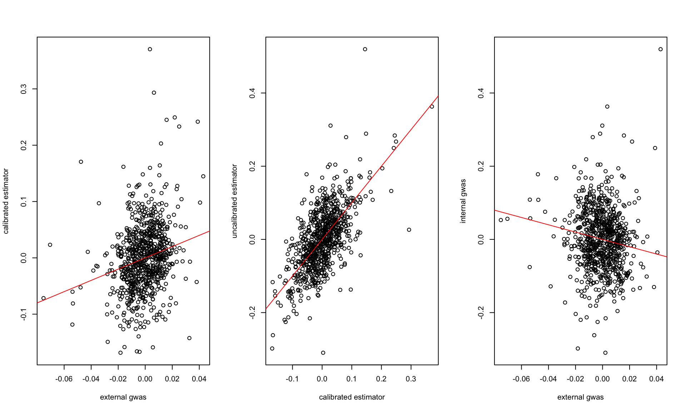
cor(dat$cali, dat$raw)[1] 0.6792842cor(dat$BETA, dat$int)[1] 0.06603958fit = lm(dat$int ~ dat$BETA)
summary(fit)
Call:
lm(formula = dat$int ~ dat$BETA)
Residuals:
Min 1Q Median 3Q Max
-0.30917 -0.05457 -0.00094 0.04813 0.53781
Coefficients:
Estimate Std. Error t value Pr(>|t|)
(Intercept) 0.0003961 0.0030210 0.131 0.8957
dat$BETA 0.4330719 0.2339932 1.851 0.0646 .
---
Signif. codes: 0 '***' 0.001 '**' 0.01 '*' 0.05 '.' 0.1 ' ' 1
Residual standard error: 0.08446 on 782 degrees of freedom
Multiple R-squared: 0.004361, Adjusted R-squared: 0.003088
F-statistic: 3.425 on 1 and 782 DF, p-value: 0.06458pval.ext = pnorm(abs(dat$BETA/dat$SE), lower.tail = FALSE)
pval.cali = pnorm(abs(dat$cali/sqrt(dat$cali.var)), lower.tail = FALSE)
pval.uncali = pnorm(abs(dat$raw/sqrt(dat$raw.var)), lower.tail = FALSE)
sum(pval.ext < 1e-8)[1] 78sum(pval.cali < 1e-3)[1] 4sum(pval.uncali < 1e-3)[1] 2par(mfrow = c(1, 2))
boxplot(dat[, c("cali.var", "raw.var")], ylab = "variance")
vr = dat$cali.var/dat$raw.var
hist(vr, main = "variance ratio", xlab = "")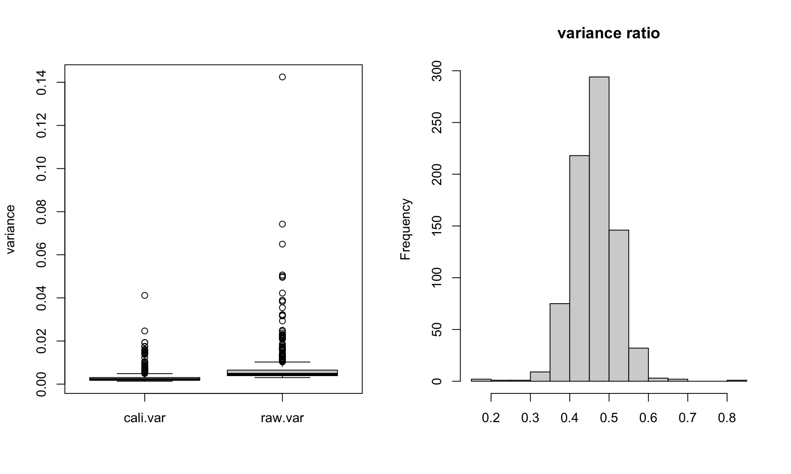
dat[vr < 0.2, c("variant", "allele.test", "cali.var", "raw.var")] variant allele.test cali.var raw.var
491 rs4406342 T 0.01373914 0.07422877
777 rs9820650 T 0.02466415 0.14247917sumstat = readRDS("/Users/nicholeyang/Downloads/calibrated_estimator/real-data-analysis/result/trio_calibration_dbp.rds")
ext = read.csv("/Users/nicholeyang/Downloads/calibrated_estimator/real-data-analysis/gwas_dbp.linear", sep = "\t")sumstat = as.data.frame(sumstat)
sumstat[, c(3:8)] = apply(sumstat[, c(3:8)], 2, as.numeric)
dat = merge(sumstat, ext, by.x = "variant", by.y = "ID", all = FALSE)
# flip sign of effect if the allele tested is different
dat$BETA = ifelse(dat$allele.test == dat$A1, dat$BETA, -dat$BETA)# check estimate scale
par(mfrow = c(2,2))
plot(dat$cali, dat$raw, xlab = "calibrated estimator", ylab = "uncalibrated estimator")
abline(a = 0, b = 1, col = "red")
plot(dat$BETA, dat$int, xlab = "external gwas", ylab = "internal gwas")
abline(a = 0, b = 1, col = "red")
hist(dat$cali - dat$raw, main = "Differece: calibrated estimator - uncalibrated estimator", xlab = "")
hist(dat$int - dat$BETA, main = "Difference: internal gwas - external gwas", xlab = "")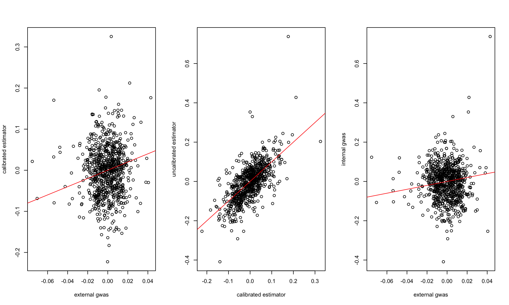
cor(dat$cali, dat$raw)[1] 0.6874893cor(dat$BETA, dat$int)[1] 0.03372446fit = lm(dat$int ~ dat$BETA)
summary(fit)
Call:
lm(formula = dat$int ~ dat$BETA)
Residuals:
Min 1Q Median 3Q Max
-0.40236 -0.05709 0.00811 0.05298 0.75736
Coefficients:
Estimate Std. Error t value Pr(>|t|)
(Intercept) -0.005209 0.003292 -1.583 0.114
dat$BETA 0.501106 0.531049 0.944 0.346
Residual standard error: 0.09203 on 782 degrees of freedom
Multiple R-squared: 0.001137, Adjusted R-squared: -0.00014
F-statistic: 0.8904 on 1 and 782 DF, p-value: 0.3457pval.ext = pnorm(abs(dat$BETA/dat$SE), lower.tail = FALSE)
pval.cali = pnorm(abs(dat$cali/sqrt(dat$cali.var)), lower.tail = FALSE)
pval.uncali = pnorm(abs(dat$raw/sqrt(dat$raw.var)), lower.tail = FALSE)
sum(pval.ext < 1e-8)[1] 4sum(pval.cali < 1e-3)[1] 4sum(pval.uncali < 1e-3)[1] 5par(mfrow = c(1, 2))
boxplot(dat[, c("cali.var", "raw.var")], ylab = "variance")
vr = dat$cali.var/dat$raw.var
hist(vr, main = "variance ratio", xlab = "")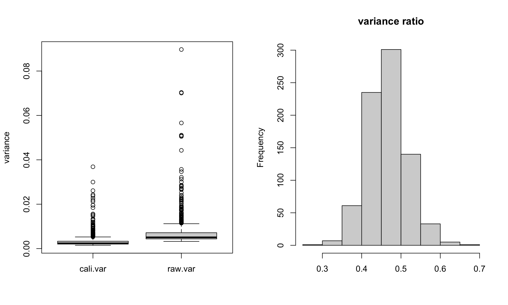
dat[vr < 0.2, c("variant", "allele.test", "cali.var", "raw.var")][1] variant allele.test cali.var raw.var
<0 rows> (or 0-length row.names)sumstat = readRDS("/Users/nicholeyang/Downloads/calibrated_estimator/real-data-analysis/result/trio_calibration_sbp.rds")
ext = read.csv("/Users/nicholeyang/Downloads/calibrated_estimator/real-data-analysis/gwas_sbp.linear", sep = "\t")sumstat = as.data.frame(sumstat)
sumstat[, c(3:8)] = apply(sumstat[, c(3:8)], 2, as.numeric)
dat = merge(sumstat, ext, by.x = "variant", by.y = "ID", all = FALSE)
# flip sign of effect if the allele tested is different
dat$BETA = ifelse(dat$allele.test == dat$A1, dat$BETA, -dat$BETA)# check estimate scale
par(mfrow = c(2,2))
plot(dat$cali, dat$raw, xlab = "calibrated estimator", ylab = "uncalibrated estimator")
abline(a = 0, b = 1, col = "red")
plot(dat$BETA, dat$int, xlab = "external gwas", ylab = "internal gwas")
abline(a = 0, b = 1, col = "red")
hist(dat$cali - dat$raw, main = "Differece: calibrated estimator - uncalibrated estimator", xlab = "")
hist(dat$int - dat$BETA, main = "Difference: internal gwas - external gwas", xlab = "")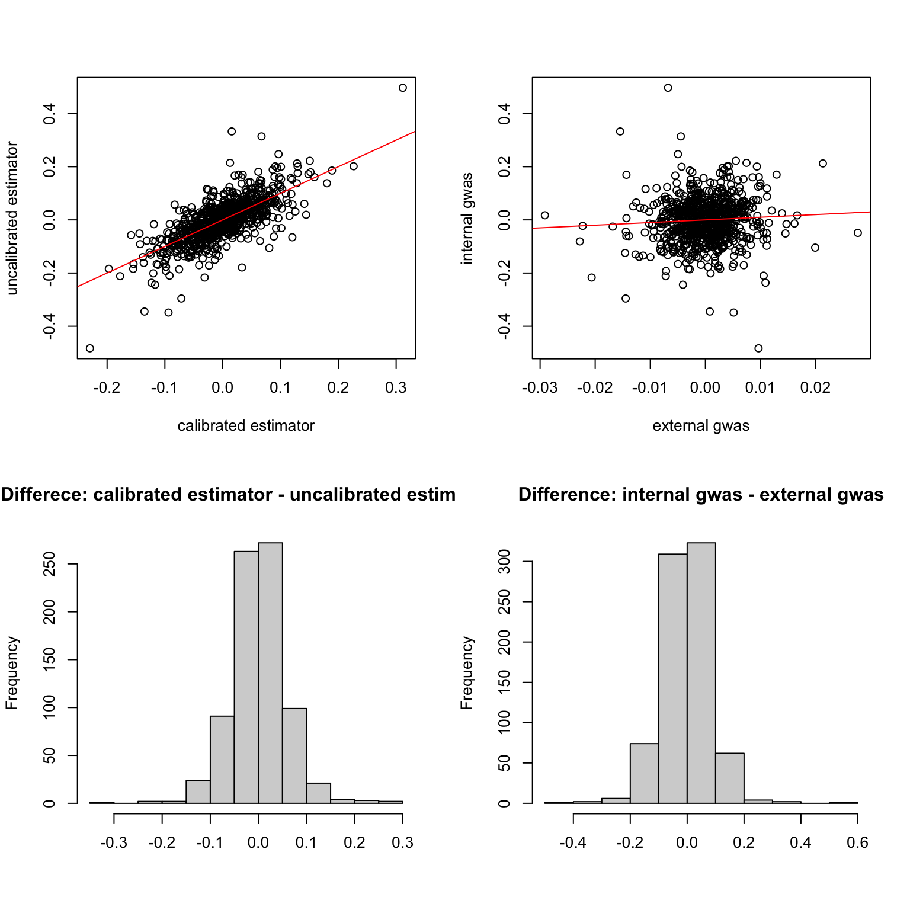
cor(dat$cali, dat$raw)[1] 0.7378141cor(dat$BETA, dat$int)[1] 0.06482806fit = lm(dat$int ~ dat$BETA)
summary(fit)
Call:
lm(formula = dat$int ~ dat$BETA)
Residuals:
Min 1Q Median 3Q Max
-0.48972 -0.04890 0.00302 0.04741 0.50642
Coefficients:
Estimate Std. Error t value Pr(>|t|)
(Intercept) -0.002982 0.003011 -0.990 0.3224
dat$BETA 1.004659 0.553016 1.817 0.0696 .
---
Signif. codes: 0 '***' 0.001 '**' 0.01 '*' 0.05 '.' 0.1 ' ' 1
Residual standard error: 0.08432 on 782 degrees of freedom
Multiple R-squared: 0.004203, Adjusted R-squared: 0.002929
F-statistic: 3.3 on 1 and 782 DF, p-value: 0.06965pval.ext = pnorm(abs(dat$BETA/dat$SE), lower.tail = FALSE)
pval.cali = pnorm(abs(dat$cali/sqrt(dat$cali.var)), lower.tail = FALSE)
pval.uncali = pnorm(abs(dat$raw/sqrt(dat$raw.var)), lower.tail = FALSE)
sum(pval.ext < 1e-8)[1] 3sum(pval.cali < 1e-3)[1] 3sum(pval.uncali < 1e-3)[1] 1par(mfrow = c(1, 2))
boxplot(dat[, c("cali.var", "raw.var")], ylab = "variance")
vr = dat$cali.var/dat$raw.var
hist(vr, main = "variance ratio", xlab = "")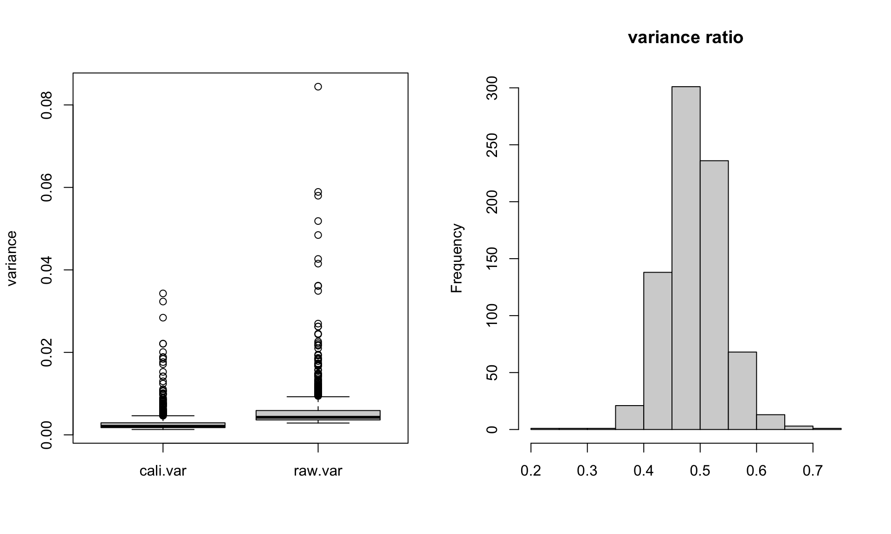
dat[vr < 0.2, c("variant", "allele.test", "cali.var", "raw.var")][1] variant allele.test cali.var raw.var
<0 rows> (or 0-length row.names)sumstat = readRDS("/Users/nicholeyang/Downloads/calibrated_estimator/real-data-analysis/result/trio_calibration_diabetes.rds")
ext = read.csv("/Users/nicholeyang/Downloads/calibrated_estimator/real-data-analysis/gwas_diabetes.linear", sep = "\t")sumstat = as.data.frame(sumstat)
sumstat[, c(3:8)] = apply(sumstat[, c(3:8)], 2, as.numeric)
dat = merge(sumstat, ext, by.x = "variant", by.y = "ID", all = FALSE)
# flip sign of effect if the allele tested is different
dat$BETA = ifelse(dat$allele.test == dat$A1, dat$BETA, -dat$BETA)# check estimate scale
par(mfrow = c(2,2))
plot(dat$cali, dat$raw, xlab = "calibrated estimator", ylab = "uncalibrated estimator")
abline(a = 0, b = 1, col = "red")
plot(dat$BETA, dat$int, xlab = "external gwas", ylab = "internal gwas")
abline(a = 0, b = 1, col = "red")
hist(dat$cali - dat$raw, main = "Differece: calibrated estimator - uncalibrated estimator", xlab = "")
hist(dat$int - dat$BETA, main = "Difference: internal gwas - external gwas", xlab = "")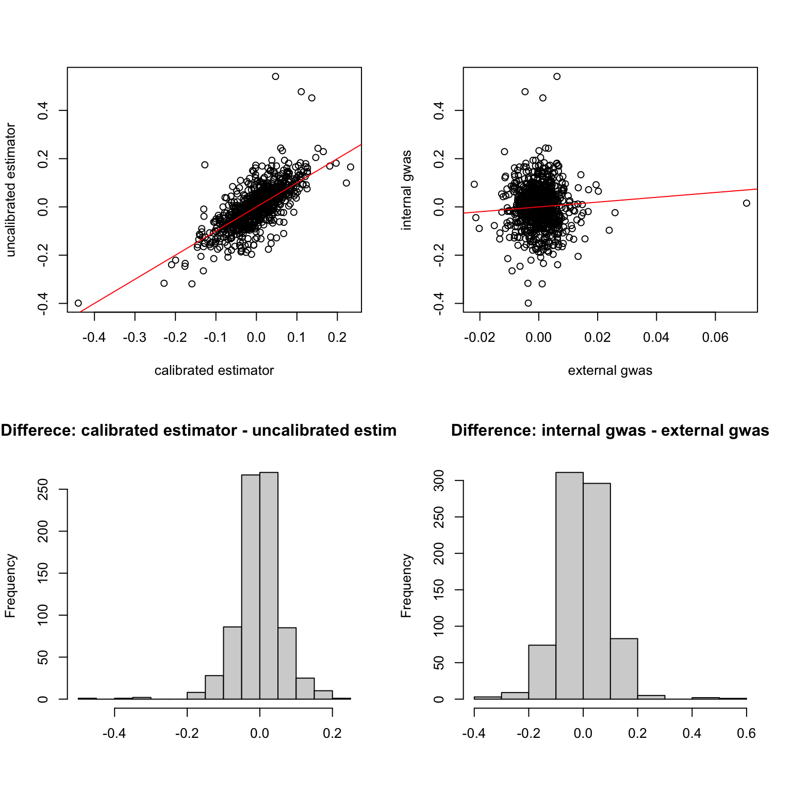
cor(dat$cali, dat$raw)[1] 0.7333494cor(dat$BETA, dat$int)[1] -0.01037944fit = lm(dat$int ~ dat$BETA)
summary(fit)
Call:
lm(formula = dat$int ~ dat$BETA)
Residuals:
Min 1Q Median 3Q Max
-0.40010 -0.05727 -0.00183 0.05544 0.54108
Coefficients:
Estimate Std. Error t value Pr(>|t|)
(Intercept) 0.0007339 0.0032712 0.224 0.823
dat$BETA -0.1593039 0.5488146 -0.290 0.772
Residual standard error: 0.09147 on 782 degrees of freedom
Multiple R-squared: 0.0001077, Adjusted R-squared: -0.001171
F-statistic: 0.08426 on 1 and 782 DF, p-value: 0.7717pval.ext = pnorm(abs(dat$BETA/dat$SE), lower.tail = FALSE)
pval.cali = pnorm(abs(dat$cali/sqrt(dat$cali.var)), lower.tail = FALSE)
pval.uncali = pnorm(abs(dat$raw/sqrt(dat$raw.var)), lower.tail = FALSE)
sum(pval.ext < 1e-8)[1] 6sum(pval.cali < 1e-3)[1] 9sum(pval.uncali < 1e-3)[1] 0par(mfrow = c(1, 2))
boxplot(dat[, c("cali.var", "raw.var")], ylab = "variance")
vr = dat$cali.var/dat$raw.var
hist(vr, main = "variance ratio", xlab = "")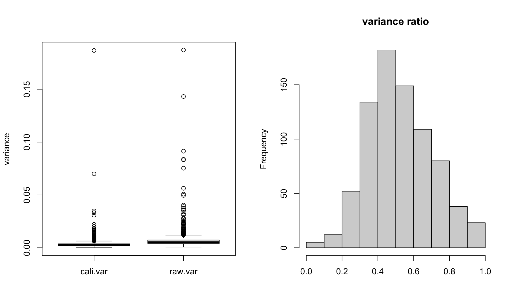
dat[vr < 0.2, c("variant", "allele.test", "cali.var", "raw.var")] variant allele.test cali.var raw.var
24 rs10418716 C 0.004432053 0.023709915
175 rs12699752 C 0.009405362 0.050733703
182 rs12893606 G 0.001543047 0.024931841
198 rs13049795 T 0.001470356 0.014956594
260 rs16851483 T 0.001084286 0.009735251
301 rs17592050 G 0.002227273 0.012932645
424 rs2826760 T 0.003665709 0.083613014
429 rs2869619 C 0.001594219 0.010780676
437 rs2962334 T 0.003358816 0.143086129
480 rs4145595 G 0.002505691 0.013314071
536 rs4937035 G 0.001018316 0.005831101
595 rs6768819 C 0.001094919 0.005932215
611 rs6891362 A 0.001052925 0.005564188
620 rs7071961 T 0.001778109 0.011277854
662 rs7550711 T 0.001684601 0.015015539
699 rs7947143 A 0.001934870 0.010373242dat[vr > 0.95, c("variant", "allele.test", "cali.var", "raw.var")] variant allele.test cali.var raw.var
39 rs10733051 G 0.0029573764 0.0030255048
53 rs10876431 A 0.0066946953 0.0067268979
147 rs12440611 T 0.0052147982 0.0053078284
170 rs12663498 T 0.0138992402 0.0139116320
276 rs17070611 G 0.0039412651 0.0040123188
281 rs17119791 T 0.1866548092 0.1870859859
348 rs2125083 C 0.0113276216 0.0114153839
434 rs2897755 G 0.0006411863 0.0006509899
600 rs681919 G 0.0079412057 0.0082813728
726 rs831630 T 0.0012987654 0.0013583604sumstat = readRDS("/Users/nicholeyang/Downloads/calibrated_estimator/real-data-analysis/result/trio_calibration_education_yrs.rds")
ext = read.csv("/Users/nicholeyang/Downloads/calibrated_estimator/real-data-analysis/gwas_education_yrs.linear", sep = "\t")sumstat = as.data.frame(sumstat)
sumstat[, c(3:8)] = apply(sumstat[, c(3:8)], 2, as.numeric)
dat = merge(sumstat, ext, by.x = "variant", by.y = "ID", all = FALSE)
# flip sign of effect if the allele tested is different
dat$BETA = ifelse(dat$allele.test == dat$A1, dat$BETA, -dat$BETA)# check estimate scale
par(mfrow = c(2,2))
plot(dat$cali, dat$raw, xlab = "calibrated estimator", ylab = "uncalibrated estimator")
abline(a = 0, b = 1, col = "red")
plot(dat$BETA, dat$int, xlab = "external gwas", ylab = "internal gwas")
abline(a = 0, b = 1, col = "red")
hist(dat$cali - dat$raw, main = "Differece: calibrated estimator - uncalibrated estimator", xlab = "")
hist(dat$int - dat$BETA, main = "Difference: internal gwas - external gwas", xlab = "")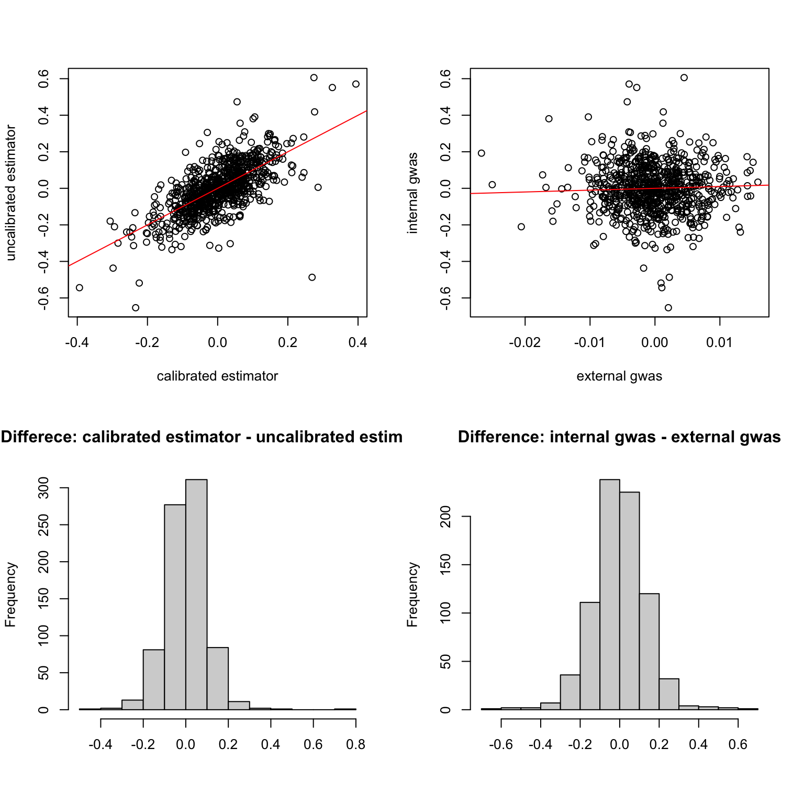
cor(dat$cali, dat$raw)[1] 0.7034617cor(dat$BETA, dat$int)[1] 0.053fit = lm(dat$int ~ dat$BETA)
summary(fit)
Call:
lm(formula = dat$int ~ dat$BETA)
Residuals:
Min 1Q Median 3Q Max
-0.87122 -0.08111 -0.00076 0.08443 0.50449
Coefficients:
Estimate Std. Error t value Pr(>|t|)
(Intercept) -0.001295 0.004934 -0.262 0.793
dat$BETA 1.326893 0.894017 1.484 0.138
Residual standard error: 0.138 on 782 degrees of freedom
Multiple R-squared: 0.002809, Adjusted R-squared: 0.001534
F-statistic: 2.203 on 1 and 782 DF, p-value: 0.1382pval.ext = pnorm(abs(dat$BETA/dat$SE), lower.tail = FALSE)
pval.cali = pnorm(abs(dat$cali/sqrt(dat$cali.var)), lower.tail = FALSE)
pval.uncali = pnorm(abs(dat$raw/sqrt(dat$raw.var)), lower.tail = FALSE)
sum(pval.ext < 1e-8)[1] 1sum(pval.cali < 1e-3)[1] 2sum(pval.uncali < 1e-3)[1] 2par(mfrow = c(1, 2))
boxplot(dat[, c("cali.var", "raw.var")], ylab = "variance")
vr = dat$cali.var/dat$raw.var
hist(vr, main = "variance ratio", xlab = "")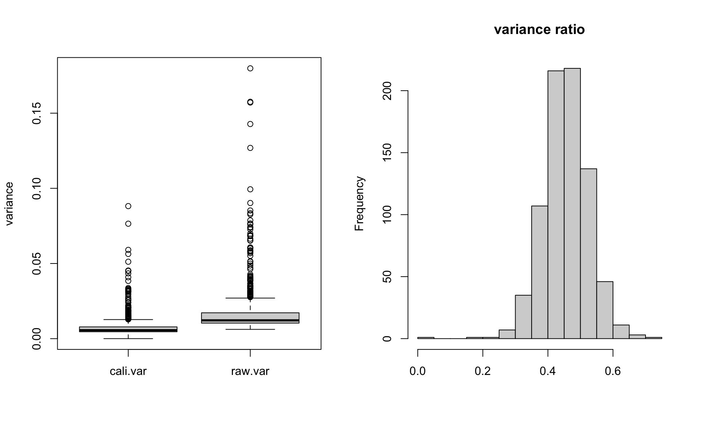
dat[vr < 0.2, c("variant", "allele.test", "cali.var", "raw.var")][1] variant allele.test cali.var raw.var
<0 rows> (or 0-length row.names)bmi = readRDS("/Users/nicholeyang/Downloads/calibrated_estimator/real-data-analysis/result/trio_calibration_bmi.rds")
sbp = readRDS("/Users/nicholeyang/Downloads/calibrated_estimator/real-data-analysis/result/trio_calibration_sbp.rds")
dbp = readRDS("/Users/nicholeyang/Downloads/calibrated_estimator/real-data-analysis/result/trio_calibration_dbp.rds")
diabetes = readRDS("/Users/nicholeyang/Downloads/calibrated_estimator/real-data-analysis/result/trio_calibration_diabetes.rds")
edu = readRDS("/Users/nicholeyang/Downloads/calibrated_estimator/real-data-analysis/result/trio_calibration_education_yrs.rds")dat = list(bmi, sbp, dbp, diabetes, edu)
for (i in 1:length(dat)){
dat[[i]] = as.data.frame(dat[[i]])
dat[[i]][, c(3:8)] = apply(dat[[i]][, c(3:8)], 2, as.numeric)
}diff = sapply(1:5, function(i) dat[[i]]$cali - dat[[i]]$raw)
vr = sapply(1:5, function(i) 1 - dat[[i]]$cali.var/dat[[i]]$raw.var)
colnames(diff) = c("bmi", "sbp", "dbp", "diabetes", "edu_yrs")
colnames(vr) = c("bmi", "sbp", "dbp", "diabetes", "edu_yrs")par(mfrow = c(1,2))
boxplot(diff, main = "calibrated estimator - raw estimator",
ylab = "", names = colnames(diff), pch = 20, cex = 0.6)
boxplot(vr, main = "variance reduction",names = colnames(diff), pch = 20, cex = 0.6)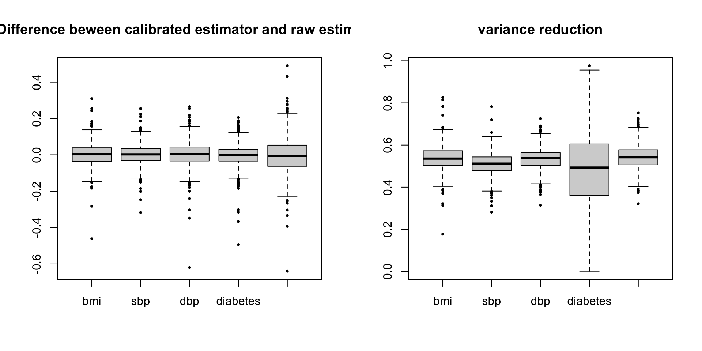
sessionInfo()R version 4.1.1 (2021-08-10)
Platform: x86_64-apple-darwin20.6.0 (64-bit)
Running under: macOS Monterey 12.0.1
Matrix products: default
BLAS: /usr/local/Cellar/openblas/0.3.18/lib/libopenblasp-r0.3.18.dylib
LAPACK: /usr/local/Cellar/r/4.1.1_1/lib/R/lib/libRlapack.dylib
locale:
[1] en_US.UTF-8/en_US.UTF-8/en_US.UTF-8/C/en_US.UTF-8/en_US.UTF-8
attached base packages:
[1] stats graphics grDevices utils datasets methods base
other attached packages:
[1] workflowr_1.6.2
loaded via a namespace (and not attached):
[1] Rcpp_1.0.8.3 rstudioapi_0.13 whisker_0.4 knitr_1.36
[5] magrittr_2.0.1 R6_2.5.1 rlang_1.1.1 fastmap_1.1.0
[9] fansi_0.5.0 highr_0.9 stringr_1.4.0 tools_4.1.1
[13] xfun_0.27 utf8_1.2.2 cli_3.6.1 git2r_0.28.0
[17] jquerylib_0.1.4 htmltools_0.5.5 ellipsis_0.3.2 rprojroot_2.0.2
[21] yaml_2.2.1 digest_0.6.28 tibble_3.1.5 lifecycle_1.0.3
[25] later_1.3.0 sass_0.4.4 vctrs_0.6.3 promises_1.2.0.1
[29] fs_1.5.0 cachem_1.0.6 glue_1.4.2 evaluate_0.14
[33] rmarkdown_2.11 stringi_1.7.5 bslib_0.4.1 compiler_4.1.1
[37] pillar_1.9.0 jsonlite_1.7.2 httpuv_1.6.3 pkgconfig_2.0.3